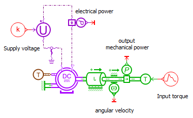
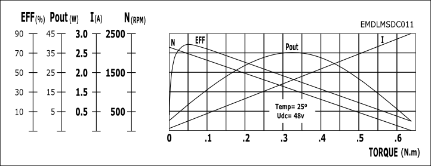
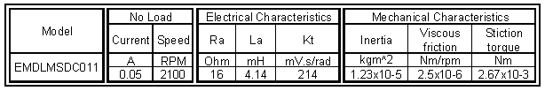
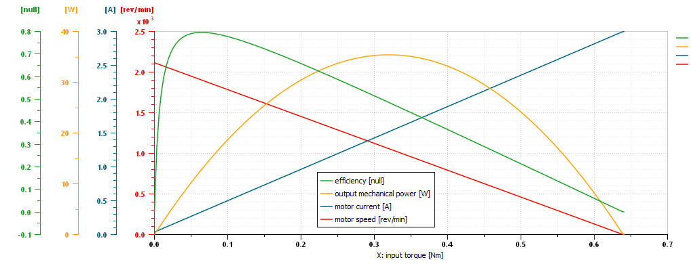

This demonstration aims at giving an example that helps the designer in selecting the appropriate DC motor for a specific application.
A standard set of curves, used to select the right motor, are plotted. The setting of sketch parameters is also explained.
$AME/demo/Libraries/EMD/01_PermanentExcitationDCMotor.ame
In order to plot a DC motor's characteristic curves, one has to represent the DC motor's mechanical and electrical behavior: It is assumed the DC motor is not a perfect one, so an inertia model with both viscous and stiction friction is added to the direct current machine model.

Figure 1: Sketch of the permanent excitation DC Motor
A machine's performance curve is typically a group of curves on the same diagram and they are typically represented with respect to mechanical torque:

Figure 2: Performance Curve for DC Motor
Note that these curves depend on the supply voltage level (retrieved from the DC motor supplier data sheets) and are given for a single temperature. Moreover, one should consider the temperature effect on the machine's characteristics.
The next step of the process is to retrieve the value for the electrical and mechanical parameters of the motor:

Figure 3: Technical Parameters
We make sure the motor operates in the temperature and with the
supply voltage for which these values are valid.
The stiction torque is obtained from the no load current or from its
explicit value given in the data sheet.
After setting the static parameters for the inertia and machine:
It is important not to forget to set the initial value of the current to
its stall value, so that no electrical transient phenomena occur at the
start of the simulation. This value can be calculated from the stall
torque (see below).
The torque input is a ramp decreasing from its stall value to 0. The stall torque is set using the maximum value between the stall torque value from data sheet and the following formula: \(k \cdot \frac{U}{R}\), with k, the torque constant, U the supplied voltage and R the electrical resistance for the armature winding.
Once all parameters are correctly set, run the simulation for the torque evolution duration.
The classical characteristic for DC motor can be plotted:

Figure 4: Current [A], Efficiency, Mechanical output power [W] and Mechanical Speed [rev/min] as a function of torque [Nm]
To select a DC motor from its characteristics, the usage of the machine must be known (intermittent or intensive usage). Indeed, optimizing the dynamic performances or the global efficiency influences the machine choice. The maximum torque can also be an important criterion. For intensive continuous usage it is recommended to select the motor so that the nominal point is between the maximum efficiency point and the maximum power point.